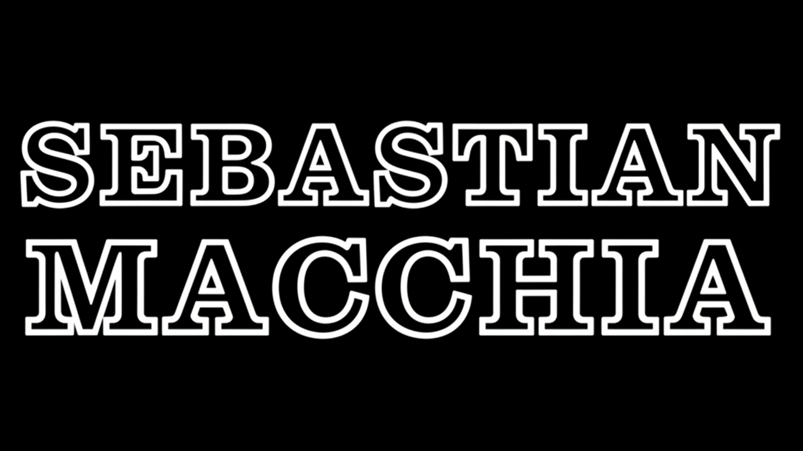

01 / Quote
Silence
Stay silent. Not everything needs to be said.
A small reminder for moments when adding words would only add noise.
A public notebook for lines I want to keep close: quotes, fragments, annotations and tiny observations before they become anything larger.

Stay silent. Not everything needs to be said.
A small reminder for moments when adding words would only add noise.
Silence is better than unnecessary drama.
Saved as a clean line: simple, direct, and useful.